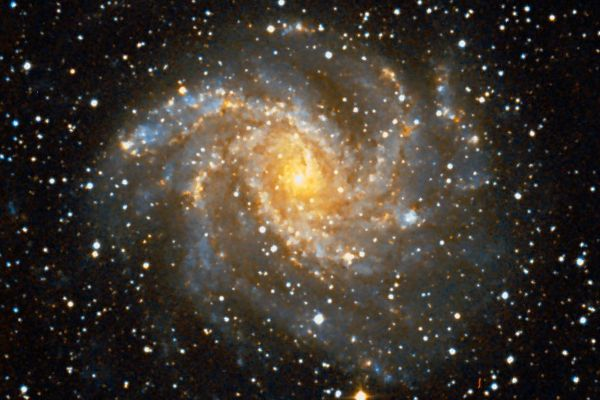

Латинское название: Cepheus
Эфиопский царь Кефей, правитель Ионны, муж Кассиопеи, отец Андромеды, едва не съеденной морским чудовищем (китом? драконом?), но спасенной Персеем.
Спиральная галактика (NGC 6946), видимая плашмя на границе с созвездием Лебедь. В ней идет активный процесс звездообразования - почему, не очень понятно. Звезды рождаются и гибнут: в этой галактике было детектировано уже девять сверхновых - финальных аккордов звездной жизни.
Впрочем, свое название она получила просто за внешний вид.
